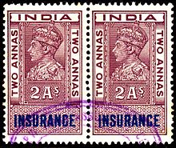

Practice Areas
- Commercial Laws
- Civil Laws
- Arbitration and Conciliation
- Intellectual Property Laws
- Criminal Laws
- Family Laws
- Domestic Violence
- Contracts
- Drafting and Registration Of Documents
- MOU
- GST and Income tax
- Export And Import
Commercial law, more often alludes to law identifying with communications between the
organization and another outsider, for example, terms and conditions, permits, affiliate
understandings and so on. The commercial law gives the principles that traders and others
engaged with business must look after as they lead business among themselves and with
customers. It represents the offers of products and ventures, debatable instruments, security
interests, leases, contracts of carriage etc. In a wide sense, commercial law additionally
incorporates related issues like business liquidation and expense arranging.
Commercial law is tied in with giving handy help to organizations over the range of agreements
they go into as they approach their everyday business. Commercial law is the assortment of law
that oversees business and business exchanges. It manages both private law and public law. The
commercial law incorporates titles as agents, carriage via land and sea, vendor shipping. It
additionally insures marine, fire, life protection, bills of trade and partnership. It can likewise be
comprehended to direct corporate contracts, employing rehearses, and the offers of shopper
merchandise.
Commercial law has grown quickly in recent years, which means that there are many difficulties
for contract law in the twenty-first century and numerous territories of commercial laws where
the present law is irrelevant.
- Commercial Agreement
- Commercial Litigation in Special Courts
- Joint venture/ mergers /acquisition
- Asset acquisition
- Asset management
- Liquidation
Civil law is the law of the state, law of the land, law of the lawyers and law courts. In
measuring civil liability the law attaches more importance to the principal of
compensation than to that of fault. It also does not take account of probable or intended
consequences but only of the consequences, which actually ensue. The word civil is
derived from ‘jus civile' of roman.
The Civil Law thus deals with civil or private rights with remedy as contrasted with
criminal laws where the state is involved. Civil Law is that body or branch of laws which
every particular nation or state or city has established peculiarly for itself. The objective
of civil law is to decide civil liability for an act or omission. Such liability is in various forms like damages, specific performance, compensation and various other segments like
property law, intellectual property law, civil aspects of the marital law etc.
- Land Laws
- Revenue Laws
- Company Act
- Securitisation & Reconstruction Of Financial Assets & Enforcement Of Security Interest
- Labour Laws
- Information Technology
- Farmers Rights
- Consumer Protection
- Environmental Laws
- Specific Performance
Arbitration is the means by which parties to a dispute get the same settled through the intervention of a third person (or more persons) but without recourse to a Court of Law. The settlement of dispute is arrived by the judgment of the third person (or more persons) who are called Arbitrators. The essence of arbitration is thus based upon the principle of keeping away the dispute from the ordinary Courts enabling the parties to substitute by a domestic tribunal. Conciliation is an informal process in which the conciliator (the third party) tries to bring the disputants to agreement. He does this by lowering tensions, improving communications, interpreting issues, providing technical assistance, exploring potential solutions and bringing about a negotiated settlement. Mediation is usually a voluntary process that results in a signed agreement which defines the future behaviour of the parties. The mediator uses a variety of skills and techniques to help the parties reach the settlement, but is not empowered to render a decision.
- Arbitration
- Conciliation
- Mediation
- Lokadalat
 As the term intellectual property relates to the creations of human mind and human intellect, this
property is called Intellectual property. Creators can be given the right to prevent others from
using their inventions, designs or other creations and to use that right to negotiate payment in
return for others using them. These are Intellectual Property Rights.
As the term intellectual property relates to the creations of human mind and human intellect, this
property is called Intellectual property. Creators can be given the right to prevent others from
using their inventions, designs or other creations and to use that right to negotiate payment in
return for others using them. These are Intellectual Property Rights.
The creation of Intellectual Property Rights (IPR) is increasingly being recognised in today’s
global economy and society. The intellectual property rights are now not only being used as a
tool to protect the creativity and generate revenue but also to build strategic alliances for the
socio-economic and technological growth.
The Convention establishing World Intellectual Property Organization, 1967 provides that the
intellectual property shall include rights relating to: (i) literary, artistic and scientific works; (ii)
performances of performing artists, phonograms and broadcasts; (iii) inventions in the field of
human endeavour; (iv) scientific discoveries; (v) industrial designs; (vi) trademarks, service
marks, commercial names and designations; (vii) protection against unfair competition; and all
other rights resulting from intellectual activity in the industrial, scientific, literary or artistic
fields.
- Filing of IPR
- Search report of IPR
- Registration of IPR
- Notice for infringement of IPR
- Litigation and Objections
Criminal law in India means offenses against the state, it includes felonies and misdemeanors. The standard of proof for crimes is "beyond a reasonable doubt."
Criminal law is governed by Indian Penal Code, Crpc, Evidence Act etc. The term criminal law means crimes that may establish punishments. Crimes are usually categorized as felonies or misdemeanors based on their nature and the maximum punishment that can be imposed. A felony involves serious misconduct that is punishable by death or by imprisonment for more than one year. Crimes that do not amount to felonies are misdemeanors or violations. A misdemeanor is misconduct for which the law prescribes punishment of no more than one year in prison. Lesser offenses, such as traffic and parking infractions, are often called violations and are considered a part of criminal law.
- Writs/PIL
- Anticipatory Bail/ Bail
- Notices/Quashing Of Fir
- Indian Penal Code
- Criminal Cases /Application/ Complaint
- Juvenile Justice Care And Protection
- Sexual offences
- POCSO
- Immoral trafficking/prohibition etc.
- Negotiable Instrument
Family Law is the branch of law, which touches each and every individual of the society. It governs an integral part of the life of the individual. In India we have a strange spectacle of personal laws. They owe their diversity to their varied origin, distinct principles and the bulk of substantive law itself. The personal laws play a vital role in governing the conflicting interest of the individuals.
Study of Family Law is Unique. It is not like the rest of the civil laws. It lacks uniformity in application. It covers an enormous area of domestic relations such as marriage, matrimonial remedies, legitimacy of children, custody, guardianship, adoption, intestate and testamentary succession etc. Family Law also deals with laws relating to Hindu Joint family, devolution of ancestral or coparcenaries property, succession to separate property of a Hindu and the Muslim law relating to gifts, wills and inheritance. The rules relating to marriage, matrimonial remedies, legitimacy of children, custody, guardianship, adoption is of immense importance as it involves the sensitive relationship between individuals in the society.
- Divorce Cases
- Cruelty against Woman
- Divorce by Mutual Consent
- Family suit/ Hindu marriage petition
- Maintenance application
- Recovery of maintenance
- Legitimacy of children
- Guardianship
- Adoption
 Domestic violence is sadly a reality in Indian society, a truism. In the Indian patriarchal setup, it became an acceptable practice to abuse women. From a feminist standpoint, it could be said that the occurrence of domestic violence against women arises out of the patriarchal setup, the stereotyping of gender roles and the distribution of power, real or perceived, in society.
Domestic violence is sadly a reality in Indian society, a truism. In the Indian patriarchal setup, it became an acceptable practice to abuse women. From a feminist standpoint, it could be said that the occurrence of domestic violence against women arises out of the patriarchal setup, the stereotyping of gender roles and the distribution of power, real or perceived, in society.
For long, the fairer sex has suffered at the hands of men, the exploitation ranges from physical to intangible abuse like mental and psychological torture. Domestic violence is one of the gravest and the most pervasive human rights violation. For too long now, women have accepted it as their destiny or have just acquiescence their right to raise their voice, perhaps, because of the justice system or the lack of it or because they are vulnerable, scared of being ostracized by their own because domestic violence still remains a taboo for most women who suffer from it or for other reasons best known to them. But not any more! Women gear up-take control because of the domestic violence act, 2005.
- Criminal complaint (Domestic Violence)
- Criminal Information (FIR)
- Application for domestic violence
- Application for Stridhan
- Revitalization of Stridhan
- Litigation
A contract is an agreement enforceable at law, made between two or more persons, by which rights are acquired by one or more to acts or forbearances on the part of the other or others. The Indian Contract Act, 1872 regulates all the transactions of a company.
The Law of Contract constitutes the most important branch of Mercantile or Commercial Law. It affects everybody, more so, trade, commerce and industry. It may be said that the contract is the foundation of the civilized world. Therefore, it is essential for the people to be familiar with the law relating to Contract.
- Indemnity
- Guarantee
- Bailment
- Pledge
- Agency
- Breach of a contract

Registration means recording of the contents of a document with a Registering Officer and preservation of copies of the original document.
Document whose registration is compulsory are instruments of gift of immovable property; other non-testamentary instruments which purport or operate to create, declare, assign, limit or extinguish, whether in present or in future, any right, title or interest, whether vested or contingent, of the value of one hundred rupees, and upwards, to or in immovable property; leases of immovable property from year to year, or for any term exceeding one year, or reserving a yearly rent and non-testamentary instruments transferring or assigning any decree or order of a court or any award when such decree or order or award purports or operates to create, declare, assign, limit or extinguish, whether in present or in future, any right, title or interest, whether vested or contingent, of the value of one hundred rupees and upwards, to or in immovable property.
The Registration Act, 1908 is the law relating to registration of documents. The object and purpose of the Act among other things is to give information to people regarding legal rights and obligations arising or affecting a particular property, and to perpetuate documents which may afterwards be of legal importance, and also to prevent fraud.
- Relinquishment/Power Of Attorney /Will/Probate
- Agreement To Sale /Sale Deed
- Lease /Mortgage/Gift/Transfer/Partnership/Dissolution
- Title Clearance/Search Report/Property Card
- Execution etc.
A Memorandum Of Understanding (‘MOU’) is generally a preliminary understanding between the parties to a contract, prior to the execution of a formal agreement. MOU is generally executed for creating consensus between the contracting parties for future contracts and is usually not intended to have created any obligations upon the parties. Primarily, what must be understood is that a MOU is non-binding and legally non-enforceable and is only an “agreement to agree” and highlights business relationship, which, are likely to result in some contract or any formal agreement between the parties. However, a MOU may create an obligation upon the parties if a binding understanding is inferred from the clauses of the MOU.
In light of the above, it can be concluded that the enforceability and binding nature of a MOU depends upon the content, nature of agreement, language and intention of the parties to it. In cases wherein the MOU is in the nature of a contract and fulfills its essentials, it is held to be enforceable. A major factor to decide whether a MOU would be binding is the intention of parties while executing the MOU and their conduct post execution.
- Outline / Draft MOU
- Letter of Intent
- Domestic and International MOU
It will help realise the goal of “One Nation-One Tax-One Market.” GST is expected to benefit all the stakeholders – industry, government and consumer. GST will lower the cost of goods and services, boost to the economy and make Indian products and services globally competitive, and even boost initiatives like ‘Make in India’.
The GST Acts provide transitional provisions for ensuring smooth transition of existing taxpayers to GST regime, credit for available stocks, etc. Some other provisions include a system of GST Compliance Rating. Anti-profiteering provisions for protection of consumer rights have also been included in the Acts.
- GST Filing
- Documentation & Registration
- Representation and Litigation
- Pledge
- Agency
- Breach of a contract
- Legal and Tax consultation
- Representation in respected tribunal
Exports and Imports have been made free in India, except where regulated by Foreign Trade Policy or some additional law for the time being in force. The item wise export and import policy would however be, as specified in Indian Trade Classification notified by Director General of Foreign Trade, as amended from time to time. Every exporter or importer is required to comply with the provisions of Foreign Trade (Development & Regulation) Act, the rules and orders made there-under, Foreign Trade Policy and terms and conditions of any authorization granted to him. All imported goods have also been made subject to domestic laws, rules, orders, regulations, technical specifications, environmental and safety norms as applicable to domestically produced goods.
IEC Code is unique 10 digit code issued by DGFT – Director General of Foreign Trade, Ministry of Commerce, and Government of India to Indian Companies. To import or export in India, IEC Code is mandatory. No person or entity shall make any Import or Export without IEC Code Number.
- Documentation For Export And Import
- Litigation / Representation